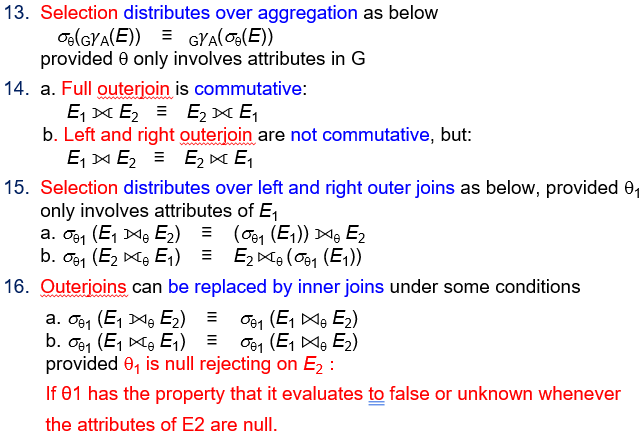
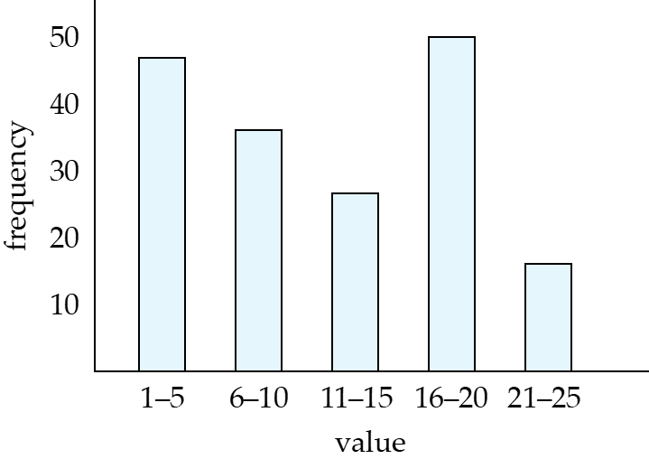
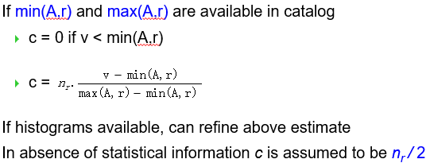
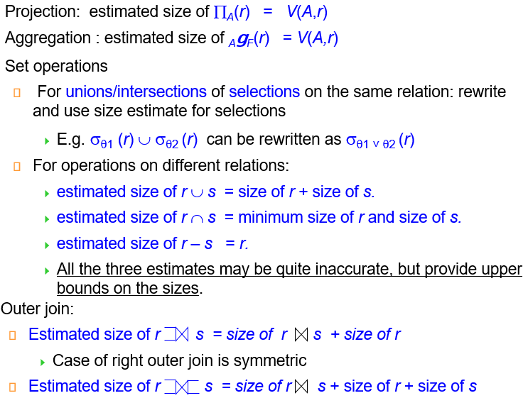
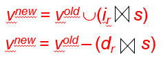
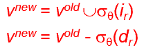

Chapter 16 Query Optimization¶
Generating Equivalent Expressions¶
- Equivalent: 两个关系代数表达式对于所有数据库实例的相同元组集，产生的结果集相同
-
Equivalence rules: 用于生成等价表达式的规则
-
Conjunctive selection 可以被分解为一系列单独的selection
\(\sigma_{\theta_1 \land \theta_2}(r) = \sigma_{\theta_1}(\sigma_{\theta_2}(r))\) -
Selection 操作是可交换的
\(\sigma_{\theta_1}(\sigma_{\theta_2}(r)) = \sigma_{\theta_2}(\sigma_{\theta_1}(r))\) -
投影操作只需要保留最外层的，内层可以忽略
\(\pi_{A_1}(\pi_{A_2}(\cdots(\pi_{A_n}(r)))) = \pi_{A_1}(r)\) -
Selection 和 Cartesian product 可以合并为join 操作，从而减小中间结果集的大小
\(\sigma_{\theta}(r \times s) = r \bowtie_{\theta} s\) \(\sigma_{\theta_1}(r_1 \bowtie_{\theta_2} r_2) = r_1 \bowtie_{\theta_1 \land \theta_2} r_2\)
-
Theta join / natural join 可交换
-
natural join 可结合；Theta join 在如下的情况下可结合：
\((E_1 \bowtie_{\theta_1} E_2) \bowtie_{\theta_2 \land \theta_3} E_3 = E_1 \bowtie_{\theta_1 \land \theta_3}(E_2 \bowtie_{\theta_2} E_3)\), where \(\theta_2\) involves attributes from \(E_2\) and \(E_3\) only - selection 对于 theta join 可分配，亦即选择操作尽量先做
- projection 对于 theta join 可分配
- Union / intersection 可交换
- Union / intersection 可结合
- selection 对于 union / intersection / difference 可分配：
- 对于intersection 和 difference，可以有：\(\sigma_{\theta}(r \cap s) = \sigma_{\theta}(r) \cap s\) 但是对于union 不成立
- projection 对于 union 可分配
其他懒得记了(

-
Statistics for Cost Estimation¶
- \(n_r\): number of tuples in a relation r.
- \(b_r\): number of blocks containing tuples of r.
- \(l_r\): size of a tuple of r.
- \(f_r\): blocking factor of r — i.e. the number of tuples of r that fit into one block.
- \(V(A, r)\): number of distinct values that appear in r for attribute A; same as the size of \(\Pi_A(r)\).
如果r的元组都存在文件中，则：\(b_r = \lceil \frac{n_r}{f_r} \rceil\)
比较直观的是直方图：

Selection Size Estimation¶
- \(\sigma_{A = v}(r)\):
- \(\frac{n_r}{V(A, r)}\) 基于属性数量均匀分布的假设下，可以粗略估计出查询的结果集大小
- 如果A 是key属性，则结果集大小就是1
-
\(\sigma_{A \leq v}(r)\): (\(\geq\)的情况是对称的)
- 记估算结果为c

- 记估算结果为c
-
组合条件：中选率（selectivity):
- 记\(s_i\)为r中满足选择条件\(\theta_i\)的元组数目； 则\(\theta_i\)的中选率为：$s_i / n
假设下面的选择条件相互独立，则可以估计联合选择条件的中选率：
-
Conjuction: \(\sigma_{\theta_1 \land \theta_2 \cdots \land \theta_n}(r)\)：
\(n_r \cdot \frac{s_1 \cdot s_2 \cdots s_n}{n_r^n}\) -
Disjunction: \(\sigma_{\theta_1 \lor \theta_2 \cdots \lor \theta_n}(r)\)：
\(n_r \cdot (1 - (1 - \frac{s_1}{n_r})(1 - \frac{s_2}{n_r}) \cdots (1 - \frac{s_n}{n_r}))\) -
Negation: \(\sigma_{\neg \theta}(r)\)：
\(n_r - size(\sigma_{\theta}(r))\)
Join Size Estimation¶
- Cartesian product r × s: \(n_r \cdot n_s\) 个元组；每个元组占用 \(s_r + s_s\) 个字节
- 若r和s没有公共属性，则 \(r \bowtie s\)和笛卡尔积相同
- 若r和s有公共属性，则\(r \bowtie s\)元组数量不超过\(n_r\)
- 公共属性是s中引用r的外键，则\(r \bowtie s\)的元组数目等于\(n_s\)
- 如果不是键，则可以这样估算：R中的每一个元组平均下来可以和S中\(\frac{n_s}{V(A, s)}\)个元组匹配，因此\(r \bowtie s\)的元组数目可以估算为：
\(\frac{n_r \cdot n_s}{V(A, s)}\), or \(\frac{n_r \cdot n_s}{V(A, r)}\)
Other operations size estimation¶

Estimation of Number of Distinct Values¶
选择操作：\(\sigma_\theta (r)\)，估算 \(V(A,\sigma_\theta (r))\)
-
如果条件 θ 强制属性 A 取某个特定值：
\(V(A,\sigma_\theta (r)) = 1\) 例如：\(A = 3\) -
如果条件 θ 强制属性 A 取某个指定集合中的值之一：
\(V(A,\sigma_\theta (r)) = \text{指定值的数量}\)
例如：\(A = 1 \lor A = 3 \lor A = 4\) -
如果选择条件 θ 的形式是 \(A \text{ op } v\)（，则估算：
$V(A,\sigma_\theta (r)) = V(A,r) * s $ 其中 \(s\) 是选择条件的中选率。 -
对于其他所有情况，使用近似估算：
\(V(A,\sigma_\theta (r)) = \min(V(A,r), n_{\sigma_\theta (r)})\)
Choice of Evaluation Plans¶
Cost-Based Join-Order Optimization¶
-
Dynamic programming approach:
-
left-deep join tree: 只允许左侧的关系参与连接，右侧的关系只能是单个关系
Additional Optimization Techniques¶
Nested Subqueries¶
-
SQL 将 where clause 中的子查询视为函数处理
-
correlation variable: 子查询中引用外部查询的变量
-
correlated evaluation: 子查询中引用外部查询的变量，导致子查询在每个外部查询元组上都需要重新计算
-
correlated evaluation 很低效，优化时会尽可能将其转换为join操作：
select name
from instructor
where exists (select *
from teaches
where instructor.ID = teaches.ID and teaches.year = 2022);
但是这样转换后不能保证结果集中重复元组的数量和原查询一致，这是由于自然连接后，表中可能出现重复的元组。
可以使用semijoin来解决该问题：右表仅用于条件判断。如果左表中元组\(r\)出现n次，右表中只要有匹配的数据，最终结果就会有n次。
一般而言，如下的SQL查询可以这样转换：
select A
from r1, r2, ..., rn
where P1 and exists (
select *
from s1, s2, ..., sm
where P2^1 and P2^2
)
- 将嵌套查询转换为带有join/semijoin查询的过程称为decorrelation
Decorrelation¶
去除相关对于标量、聚合子查询的一些情况会更复杂：
select name
from instructor
where 1 < (
select count(*)
from teaches
where instructor.ID = teaches.ID
and teaches.year = 2022
)
可转换为：
\(\Pi_{name}(instructor \ltimes_{instructor.ID = TID \cap 1 <_{cnt}}(_{ID as TID} \gamma_{count(*) as cnt}(\sigma_{teaches.year = 2022}(teaches))))\)
Materialized Views¶
视图通常没有实际空间与之对应。但是如果要经常用到，可以将view实际存储下来，即为 materialized view
Materialized View Maintenance¶
一旦改变底层数据，则需要更新materialized view，维护代价较大
- incremental view maintenance增量维护：不需要重新计算所有数据，只对更新的部分进行局部修改
Join & select¶
 
Projection¶
对于\(\Pi_A(r)\)，需要额外记录原始表中A出现的count： + insert：increment count + delete: decrement count / if 0 then delete the result of \(\Pi_A(r)\)
Aggregation Operations¶
- count ：$v = {A}\mathcal{G}(r) $
- Insert：
- 对于每个新插入的元组
r，检查其分组键A是否已存在于结果集v中： - 若存在，则将该组的计数
count加 1 - 若不存在，则在
v中新增一个元组，并设置count = 1。
- 对于每个新插入的元组
-
Delete：
- 对于每个待删除的元组
t，找到v中对应的分组t.A，并将该组的计数 减 1。 - 如果计数减到 0，则从
v中删除该分组。
- 对于每个待删除的元组
-
sum: \(v = _{A}\mathcal{G}_{sum(B)}(t)\)
- 与
count类似，但插入或删除时，加减的是B的具体value而不是count - 额外维护计数：
- 需同时记录每组的
count，以便检测组内是否还有元组。 - 为什么不能直接判断
sum = 0？- 因为
B的值可能正负抵消（如+5和-5的和为 0，但组内仍有数据），需依赖count = 0确认无数据。
- 因为
- 与
-
avg
- 分别维护每组的
sum和count，最终计算时用sum / count得到平均值。 - 避免重复计算，且能动态更新（如数据增减时调整
sum和count）。
- 分别维护每组的
-
min/max:
- insert：直接和当前最值比较即可
- delete：可能要重新找出当前组中的最值
其余操作类似，总之尽可能维护较少的中间数据，尽量避免重新扫描